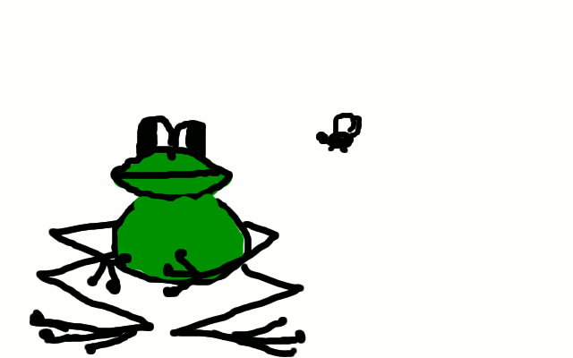

<script type="text/javascript">
 function okno_zamknij_wieteska() 
 {
 window.close()
 }
 </script>
<textarea>
<html>
 <head>
 <script type="text/javascript">
 function okno_zamknij_wieteska() 
 {
 window.close()
 }
 </script>
 </head>
<body>
<b>1.kiedy powstał</b> - powstał w 1995 roku<br>
<b>2.dlaczego jest to język skryptowy</b> - Nie musi zostać skompilowany do kodu maszynowego, aby można było zobaczyć efekty jego działania.<br>
<b>3.gdzie jest wykonywany JS (klient lub serwer)</b> - po stronie użytkownika w środowisku przeglądarki internetowej<br>
<b>4.dlaczego jest to bezpieczne narzędzie</b> - <br>
<b>5.czy jest to język obiektowy , jeśli tak to dlaczego</b> - <br>
 <br>
 window.open("obraz.html","okienko","toolbar=no,directories=no,menubar=no,height=280,width=160,top=200,left=200");<br>
<b>toolbar=no</b> - ukrywa standardowy pasek narzędzi<br>
<b>directories=no</b> - ukrywa przyciski katalogów<br>
<b>menubar=no</b> - ukrywa menu przeglądarki<br>
<b>height=280</b> - ustawia wysokość okna na 280 pixeli<br>
<b>width=160</b> - ustawia szerokość okna na 160 pixeli<br>
<b>top=200</b> - ustawia położenie okna względem góry ekranu na 200 pixeli<br>
<b>left=200</b> - ustawia położenie okna względem lewej strony ekranu na 200 pixeli<br>
 <input type="button" value="zamknij okno" onclick="okno_zamknij_wieteska()"/>
</body>
</html>
</textarea><br>
<input type="button" value="zamknij okno" onclick="okno_zamknij_wieteska()"/>